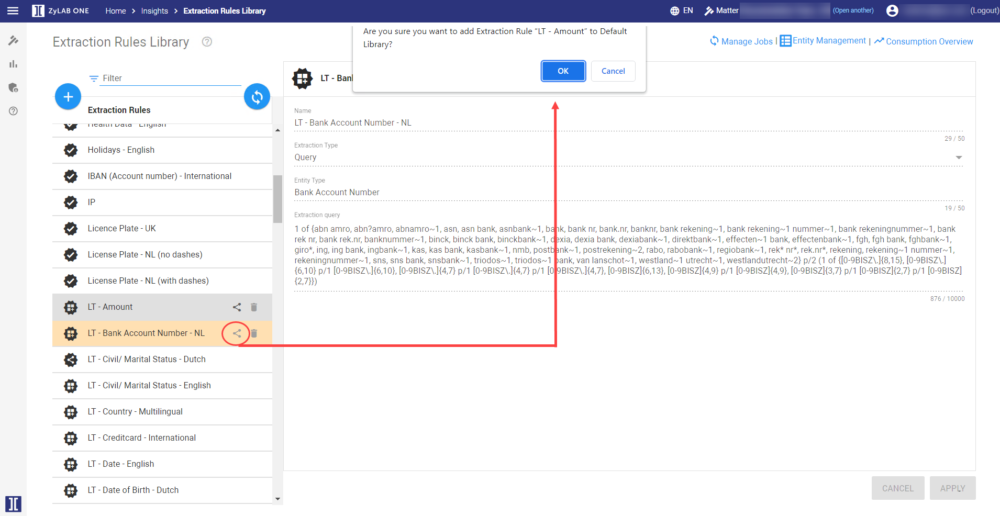
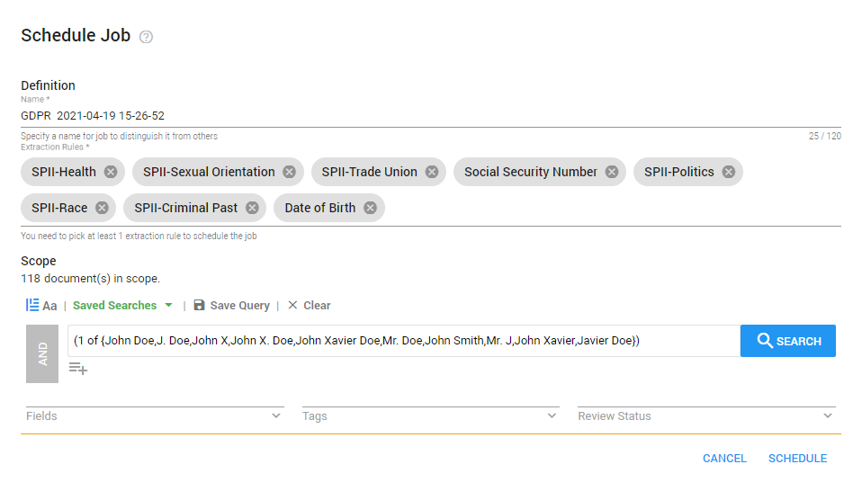
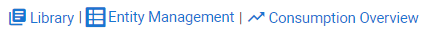

Tip: Watch the Insights Product Launch Video and/or the 'Insights for Investigations' video on the Insider Channel.
Insights can be useful and convenient for handling access requests. As previously mentioned, the GDPR distinguishes between regular and sensitive data. It can be burdensome to find sensitive personal data in big data sets. Some examples include: religious beliefs, political opinions, criminal past, health data etc. It is not easy to find these sorts of data because they are broad, vague, and can be difficult to search. However, the Insights function can easily find these in the documents and categorize them for a better overview. Extract relevant information (entities), such as real world objects (persons, locations, organizations, products, etc.), emotions, sentiments and references between them.
|
|
Tip: Watch the Insights Product Launch Video and/or the 'Insights for Investigations' video on the Insider Channel. |
View extracted entities in Document View.
Extracted entities are also shown and can be selected in Facets view (the  icon identifies the facet as an extracted entity).
Click on a section in the facet to drill down.
icon identifies the facet as an extracted entity).
Click on a section in the facet to drill down.
When searching for extracted entities via the Fields option, for performance reasons, only the first 10 values will be shown in an extracted entity field. For instance, if extracting email addresses, only the first 10 extracted email addresses will be shown. If you want to view all extracted email addresses, you need to download or export the result list.
Each extracted entity field can be searched like any normal field. All extracted values from the library are automatically added to choose from.
Note: If you do not have access to the Insights functionality yet—contact ZyLAB.
Insights can be found on the Home page.

Library
First, make sure entity rules are added to the library.
Jobs
Then, schedule a job to extract the defined entities of an entity rule.
Entity Management
View the list of Entity Types. Manage entity types by enabling/disabling entities.
Consumption Overview
View the Insights usage statistics.
The extraction of the data is based on extraction rules. These rules can be configured under the Library option. The ZyLAB ONE software comes with a set of different kinds of default extraction rules that can be used for GDPR Compliance, like PTM person, SSN etc. It is also possible for the user to create their own extraction rules. This can be done by clicking on the + option whilst in the Library, followed by creating a name and selecting the wished configure type of the extraction. The configure type of the extraction can be, for instance, a query, regular expression or a PTM.
After choosing the configuration type, the user will have to set the correct entity type, which can be anything from an emotion to money value, and establish the extraction.In the Library, extraction rules are created and stored. Matters contain predefined rules that cannot be deleted.
Add Synchronized Rules to a New Matter
Note: Synchronize Rules is only available on dedicated nodes (and not on shared ones).
By default, a set of extraction rules is available in the library. New rules can be added and synchronized across all matters.
These new synchronized rules are not automatically shown in a new matter. Click the Synchronize with Default Library button to add your synchronized rules.


Extraction Rules can be synchronized across matters (only enabled on dedicated nodes).
First, make sure to add an Extraction Rule to the default library by selecting the Add to Default Library icon.

An Extraction Rule that has been added to the default library can be recognized by default library icon:

In another matter, select the button Synchronize with Default Library and the rules added to the default library will be added to the list.
The Insights function is a powerful tool which can easily extract sensitive or regular personal data from the documents you are searching through. The extractions are categorized and visible on the right side of the document and you can easily navigate through them.
In the Jobs category, the user can perform and follow the progress of performed extractions on specific datasets or the whole matter. On the left side of the screen, the user can view the history of previously completed extractions. To start a new extraction job, the user can select the + option. Schedule a job to extract the defined entities of an extraction rule.
Instructions

In the Jobs category, the user can perform and follow the progress of performed extractions on specific dataset or the whole matter. On the left side of the screen, the user can view the history of previously completed extractions. To start a new job, the user can select the + option.
Multiple insight rules can be run at the same time for a specific query such as the query for John Doe’s names:

Switch to the Library/Entity Management/Consumption Overview (top right corner)

On the Entity Management page, all entity types can be viewed. For example, persons, locations, countries, dates and many more. Select the Phone option to view all different phone numbers, how many times those numbers are present (the hits), and in how many different documents. The results can be exported to Excel or CSV. The user can turn a certain entity on or off. This will affect whether or not the entity will be highlighted and redacted in the documents.View a list of all extraction types. Per extraction type, you can enable/disable entities that extract data (for example, you might want to disable an entity when that extracted data is not relevant at this moment).
Instructions


Switch to the Library/Manage Extractions/Consumption Overview (top right corner)

ZyLAB ONE tracks the number of characters that are being used to extract relevant information out of the datasets. The consumption overview can be viewed by selecting the Consumption option. Here, the user can set the time range of the consumption overview, as well as how many characters were consumed during that time range. The costs of using Insights are being calculated by the number of characters consumed during extractions.View the Insights usage statistics.
Instructions